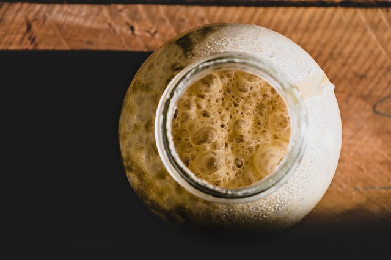
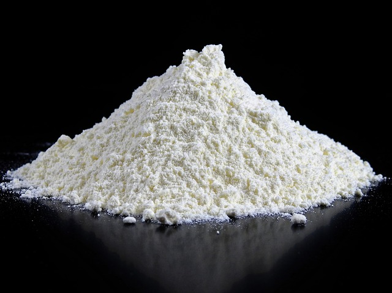
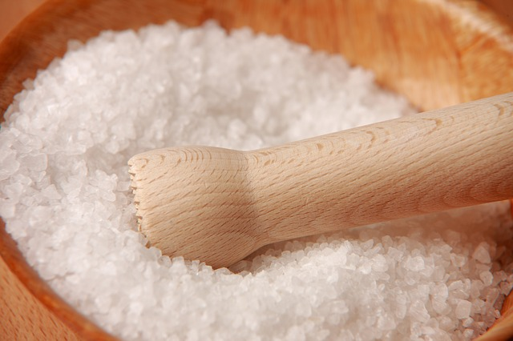
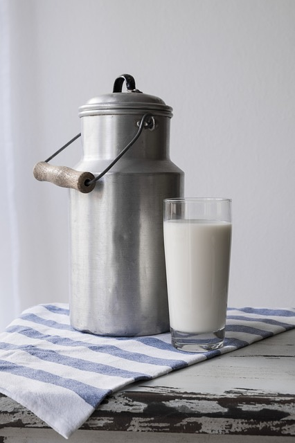
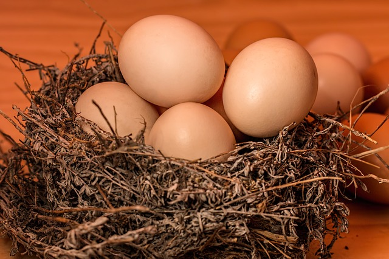
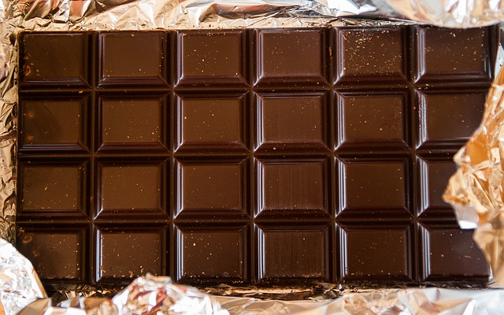

| Ragelių su šokoladu receptas | Aptepimui | |||||||||
| Ingredientai | Mielės | Miltai | Sviestas | Cukrus | Druska | Pienas | Kiaušiniai | Šokoladas | Kiaušinio trynys | Šiltas pienas |
|---|---|---|---|---|---|---|---|---|---|---|
| Vaizdas |  |  |

|

|
 |  |  |  | ||
| Kiekis 1 porcijai | 25g | 500g | 250g | 1 šaukštas | Žiupsnelis | 200ml | 1 plakto kiaušinio | 200g | 1vnt. | 1 šaukštas |
-
- Sumaišykite visus sausus ingredientus dubenyje.
- Padarykite duobutę, ten supilkite pieną ir įmuškite kiaušinį.
- Išminkykite nelipnią tešlą.
- Suformuokite tešlos kamuoliuką, kurį įdėkite į dubenį, apvyniokite plėvele ir rankšluosčiu ir padėkite kur nors šiltai, kol tešla padvigubės.
-
- Pasiruoškite sviestą, kuris turi būti kambario temperatūros.
- Ant stalo patieskite maistinės plėvelės, ant jos uždėkite sviestą, o ant sviesto vėl užtieskite maistinės plėvelės (galite naudoti ir didesnį švarų maišelį).
- Tuomet sviestą iškočiokite, kad jis taptų maždaug 0.5-1cm storio ir stačiakampio formos.
- Iškočioję sviestą, jį padėkite į šaldytuvą.
-
- Kai tešla padvigubės, ją dar kartą išminkykite, suvynioti į maistinę plėvelę ir padėkite 10-15 minučių į kamerą.
-
- Ištraukę tešlą ją iškočiokite ant miltuoto stalą.
- Tešlą iškočioti trigubai didesnę nei iškočiotas sviestas.
- Tešlą padalinkite mintimis į tris dalis, tuomet į vidurinį trečdalį įdėkite sviestą, jį apdengti tešla iš vieno krašto ir iš kito.
- ešlą pasisukite taip, kad būtų lyg "knyga, kurios galima atversti lapą" (pažiūrėkit video bus aišku, kaip tai turi atrodyti).
- Tešlą iškočiokite maždaug 1cm storio ir vėl sulankstykite tokiu pat principu, kaip kad dėjote sviestą.
- Gautą masę suvyniokite į maistinę plėvelė ir padėkite į kamerą bent 15-20 min (tešla nekils, turi būti kietoka).
- Ištraukę tešlą iš šaldytuvo pasidėkite taip kaip knygą, iškočiokite ir vėl sulankstykite kaip darėte prieš tai. Įvyniokite į maistinę plėvelę ir dėkite vėl 15-20 į kamerą.
- Šį etapą pakartokite dar kartą.
-
- Iškočiokite tešlą maždaug 3-4 mm. storio.
- Supjaustykite norimo dydžio trikampiais, į vidų įdėkite šokolado gabaliukų ir suvyniokite nuo plačiosios dalies link trikampio viršūnės.
-
- Kruasanus sudėkite į skardą, leiskite jiems pakilti. Tuomet aptepkite kiaušinio ir pieno plakiniu.
-
- Kepkite 200C įkaitintoje orkaitėje apie 20 min. kol gražiai paruduos.